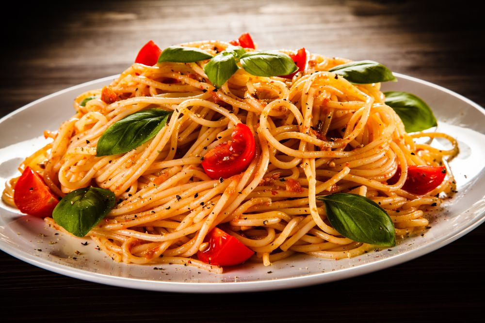

Macarrão
- Ingredientes 
- 1 colher de óleo
- Tempero e sal a gosto
- 2 caldos de carne knorr
- 2 cebolas raladas
- 2 latas de pomarola
- 4 latas de água (utilizar a lata da pomarola para medir a água)
- 2 cremes de leite
- 500 gramas de macarrão penne
- 300 gramas de mussarela fatiada
- Modo de Preparo
-
1 Coloque em uma panela o óleo, os tempero, o caldo knorr, a cebola ralada e deixe
dourar em seguida despeje a pomarola,
a água, o creme de leite e o macarrão
e deixe cozinhar. Quando o macarrão estiver no ponto despeje a metade do macarrão em uma travessa
cubra com a mussarela fatiada, depois acrescente o restante do macarrão e por último levo ao forno pré-aquecido
por alguns muitos para derreter a mussarela.